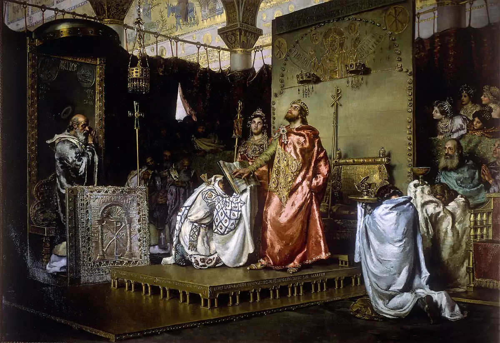
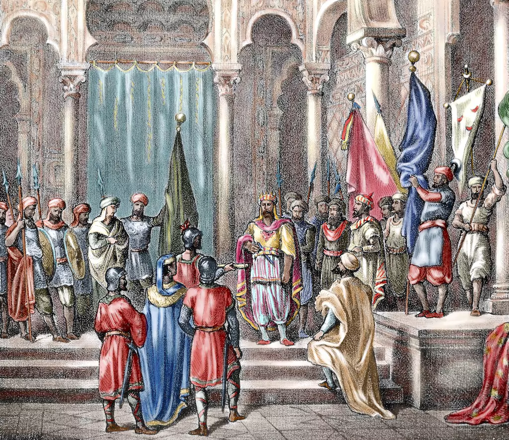
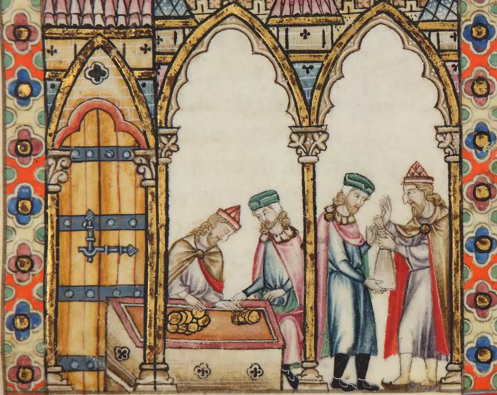

The history of Toledo

Toledo is known as the "City of the Three Cultures" due to its historical coexistence of Christians, Muslims, and Jews.
This unique cultural blend was particularly prominent during the Middle Ages, making Toledo a center of cultural and intellectual activity, particularly in areas such as philosophy, science, and the arts.
The city was known for its schools of translation, where scholars translated many important works from Arabic and Hebrew into Latin, making Toledo a key center for the transmission of knowledge in medieval Europe.
Here are the key points that contributed to Toledo's designation:
Christian Influence
Toledo was the capital of the Visigothic Kingdom and an important Christian center. The Visigoths converted to Christianity and established numerous churches and monasteries, until the early 8th century, when it was conquered by the Moors.
After the Reconquista in 1085, when Christian forces retook Toledo, the city became a significant Christian center, with the construction of many churches, monasteries, and the famous Toledo Cathedral.
Muslim Influence
During the Islamic rule from 711 to 1085, Toledo was an important city in Al-Andalus, the Muslim-ruled areas of the Iberian Peninsula.
While Muslims were the ruling class, Christians and Jews were considered "dhimmi" (protected people) under Islamic law. They were allowed to practice their religions and maintain their own institutions, albeit with some restrictions and the requirement to pay a special tax.
Muslims contributed to Toledo's architectural and intellectual heritage, with notable structures like the Mosque of Cristo de la Luz.
Jewish Influence
Jews are believed to have settled in Toledo as early as the Roman period. They lived alongside the Christian and Muslim populations, contributing to the city's diverse cultural landscape.
The period of Muslim rule (from the 8th to the 11th centuries) is often considered the Golden Age for Jews in Spain. During this time, Toledo emerged as a significant center for Jewish learning, culture, and commerce.
The Jewish Quarter in Toledo was one of the most prominent in Spain, with synagogues such as the Synagogue of El Tránsito and the Synagogue of Santa María la Blanca, which are still standing today.
Significance Today
In recognition of its rich multicultural history, Toledo was designated a UNESCO World Heritage Site in 1986. Visitors today can explore the remnants of this period of coexistence through its well-preserved historical buildings and museums.
Toledo remains a symbol of the potential for coexistence among different cultures and religions. Its historical narrative is often cited as an example of how diverse communities can contribute to a shared cultural and intellectual legacy.
Main events in Toledo
Holy Week
Throughout Easter week
Religious event with a series of processions
Corpus Christi
~June (60 days after Easter)
Religious festival to honour the presence of the Holy Eucharist
International Music Festival of Toledo
May-June
Concerts of various musical genres held in historic venues
Toledo Tapas Fair
November-December
Gastronomic event showcasing regional ingredients and culinary creativity